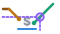

Demo tests
Demo tests
Demo page · the same as a test report · 200 JUnit tests, all passed
Everything the demo page can show, without moving a handle: the parameters in six groups, the balances in increasing order, each with its status, amount and picture at S, M and L (phone, tablet, laptop). Chosen by functional coverage: categories of the parameters, pairwise, every status and every boundary, nothing that shows the same twice. Smaller than S, every picture is one of two icons, whatever the parameters:

1 · Two thresholds with nominals
The usual picture.
threshold: −$8k [$40k ; $60k] +$10k · A $25k · L $30k
x = $32k = Tₘᵢₙ − τₘᵢₙ → Swept In Full $8k